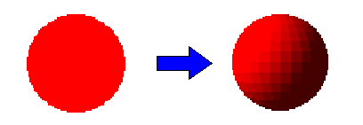
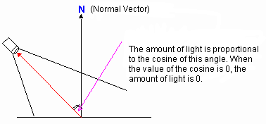
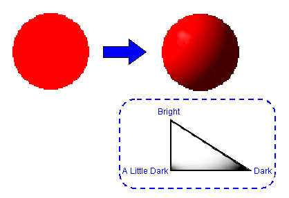
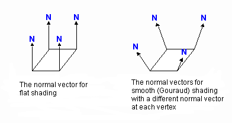

Shading is adding shadow to an object by calculating the materials and lighting. N64 implements flat shading and smooth shading (Gouraud shading).
In flat shading each surface is shaded uniformly by using the same color as illustrated here:

This shading technique calculates the normal vector and the light source of a surface, and applies uniform color to the surface. As a result, objects will appear blocky (like computer graphics).

Use the following N64 functions to apply flat shading:
The smooth shading technique smooths out the shading to make it appear more realistic. Note that smooth shading affects the inside shading only; it has no effect on the outline of the object, as you can see in this illustration:

There are many different techniques that you could use to implement smooth shading. One of the most popular is Gouraud shading. Gouraud shading, named for its developer, gives a normal vector to each vertex of the surface; in other words, it calculates both the light source and the normal vector for each vertex. In this way, it interpolates calculated light for each vertex to make the shading appear smooth as illustrated here:

By providing shading, you can put colors that are reflected from surrounding objects on your shaded object.
Use the following N64 functions to apply smooth shading:
Nintendo® Confidential
Copyright © 1999
Nintendo of America Inc. All Rights Reserved
Nintendo and N64 are registered trademarks of Nintendo
Last Updated March, 1999